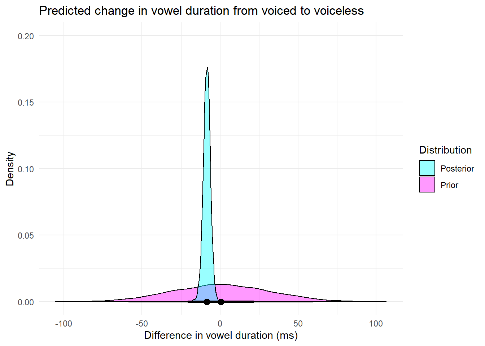

# Load our datasets
incNeutr <- read_csv("../../data/E1_production.csv") |>
# we will focus only on the relevant columns
select(subject, voicing, item_pair, usable, vowel_dur) |>
# and only on rows the authors deemed usable
filter(usable == "usable") |>
select(!usable)session11 - homework
Preamble: Loading packages and configuration
Introduction
We will be analyzing the data from Roettger et al. (2014).
The variables:
subject: unique identifier for participants (n = 16)
voicing: underlying voicing status of stop (voiced vs. voiceless)
item_pair: unique identifier for pseudo word minimal pairs (n = 24)
vowel_dur: vowel duration in ms
In this study, we recorded people producing words such as Rad and Rat in German and were interested to see whether these words phonetically differ. The reason why this is interesting is that, according to German phonology, these words should be identical, i.e. he voicing distinction between /d/ and /t/ should have been neutralized. However, previous literature indicates that this neutralization is phonetically incomplete. For example, the vowel preceding a (de)voiced stop such /d/ is slightly longer preceding a voiceless stop such as /t/.
The researchers hypothesize that the vowel duration is meaningfully longer preceding voiced stops than preceding voiceless stops. They model this relationship using a linear mixed effects model that accounts for both speaker and word variation as well as by-speaker and by-word variation for the critical predictor voicing.
# store model formula
mdl_formula = bf(vowel_dur ~ voicing +
# random intercepts and slopes for subject and item_pair
(1 + voicing | subject) +
(1 + voicing | item_pair))# some weakly informative priors
my_priors <- c(prior(normal(150,50), class = 'Intercept'),
# weakly informative prior for the voicing difference (very diffuse)
prior(normal(0, 30), class = 'b', coef = 'voicingvoiceless'),
# weakly informative prior for all sources of variance (very diffuse)
prior(cauchy(0,100), class = 'sd'),
# weakly informative prior for residual variance (very diffuse)
prior(cauchy(0,100), class = 'sigma'),
# correlations
prior(lkj(1), class = 'cor'))# run model
xmdl <- brm(mdl_formula,
family = gaussian(),
prior = my_priors,
file = "../../models/in_sesoi",
data = incNeutr,
seed = 42)
# I also store the prior-only model
xmdl_prior <- brm(mdl_formula,
family = gaussian(),
prior = my_priors,
sample_prior = "only",
file = "../../models/in_sesoi_priors",
data = incNeutr,
seed = 42)Exercises
(a) Plot the posterior distribution
Explore the posterior distribution for the difference between voiced and voiceless stops. Interpret it.
# Plotting posterior
draws_prior <-
xmdl_prior %>%
spread_draws ( b_voicingvoiceless )
draws_posterior <-
xmdl %>%
spread_draws ( b_voicingvoiceless )
ggplot() +
geom_density(
data = draws_prior,
aes(
x = b_voicingvoiceless,
fill = "Prior" ),
alpha = 0.4 ) +
geom_density(
data = draws_posterior,
aes(
x = b_voicingvoiceless,
fill = "Posterior" ),
alpha = 0.4 ) +
stat_pointinterval(
data = draws_prior,
aes(
x = b_voicingvoiceless,
y = 0 ),
.width = c(0.5, 0.95) ) +
stat_pointinterval(
data = draws_posterior,
aes(
x = b_voicingvoiceless,
y = 0 ),
.width = c(0.5, 0.95) ) +
scale_fill_manual(
name = "Distribution",
values = c("Prior" = "#FF00FF",
"Posterior" = "#00FFFF") ) +
labs(
title = "Predicted change in vowel duration from voiced to voiceless",
x = "Difference in vowel duration (ms)",
y = "Density" ) +
scale_y_continuous(limits = c(0, 0.2) ) +
theme_minimal()
# Looking at posterior numerically
bayesfactor_parameters(xmdl)Bayes Factor (Savage-Dickey density ratio)
Parameter | BF
---------------------------
(Intercept) | 4.42e+13
voicingvoiceless | 21.15
* Evidence Against The Null: 0p_direction(xmdl)Probability of Direction
Parameter | pd
-------------------------
(Intercept) | 100%
voicingvoiceless | 99.98%Interpretation
Looking at the posterior visually and comparing it to the prior we can see that the predicted distribution of change in vowel duration has narrowed a lot. The visual inspection also shows that the vowel duration seems to shift toward a shorter duration when we go from voiced to voiceless stops, with a distribution that goes from ~-20 to ~0.
Looking at the numbers we get a Probability of Direction of 99.98% which shows that values above 0 are also within the realm of possibility (~0.02%). Calculating a Bayes Factor on 0 given the Savage-Dickey density method shows a Bayes Factor of 19.59. Given that our posterior is 19 times more likely than our prior, the argument can be made that there is strong evidence for the hypothesis. Note that this is checking against a point value.
(b) Define a SESOI
Define a SESOI and justify it. Can you find an applied justification for a SESOI. Or a theoretical justification? Are there justifications grounded in measurement? What about justifications based on previous research? Define it and formalize it as a Region of Practical Equivalence as we have done before. Use the bayesfactor_rope() function to calculate the Bayes factor for and against the posteriors being inside the ROPE.
Justification for SESOI
The hypothesis we are considering is given as such: The researchers hypothesize that the vowel duration is meaningfully longer preceding voiced stops than preceding voiceless stops. Attempts to justify a SESOI will use information about the experiment from Roettger et al. (2014).
Trying to find an applied justification for a meaningful difference would have to include an effect that could incur a somewhat reliable use case of the difference for a person in communication. This becomes hard to combine with the experiment as it was done in close to idealized conditions (“sound-treated booth”). In idealized conditions it has been shown that participants can distinguish differences down to as short as 5 ms Lehiste (1973). This can be used then to justify a Just Noticable Difference for an SESOI.
Some measurement differences can be added. The sampling rate was given as 44.1kHz, giving us 44.1 samples per millisecond or ~0.23 ms error. Note that as duration is being measured from a defined area in an utterance other interface delays (screen updating, recording delays etc.) should not apply.
# YOUR ANSWER HERE
BF_2 <-
bayesfactor_rope(posterior = xmdl,
null = c(-5,5),
parameter = "b_voicingvoiceless")
BF_2Bayes Factor (Null-Interval)
Parameter | BF
-----------------------
voicingvoiceless | 2.83
* Evidence Against The Null: [-5.000, 5.000]Note that, even when setting a ROPE fit for rather idealized settings, we still get a lower Bayes Factor of 2.72 showing anecdotal support for a meaningful effect from our hypothesis.
(c) Check robustness of your analysis
How robust is your conclusion against different prior choices?
# YOUR ANSWER HERE
# Defining set of different priors that varies for b
priors_5 <- c(prior(normal(150,50), class = 'Intercept'),
prior(normal(0, 5), class = 'b', coef = 'voicingvoiceless'),
prior(cauchy(0,100), class = 'sd'),
prior(cauchy(0,100), class = 'sigma'),
prior(lkj(1), class = 'cor'))
priors_60 <- c(prior(normal(150,50), class = 'Intercept'),
prior(normal(0, 60), class = 'b', coef = 'voicingvoiceless'),
prior(cauchy(0,100), class = 'sd'),
prior(cauchy(0,100), class = 'sigma'),
prior(lkj(1), class = 'cor'))
priors_2 <- c(prior(normal(150,50), class = 'Intercept'),
prior(normal(0, 2), class = 'b', coef = 'voicingvoiceless'),
prior(cauchy(0,100), class = 'sd'),
prior(cauchy(0,100), class = 'sigma'),
prior(lkj(1), class = 'cor'))
# Run models on the differing priors
xmdl_5 <- brm(mdl_formula,
family = gaussian(),
prior = priors_5,
file = "../../models/5",
data = incNeutr,
seed = 42)
xmdl_60 <- brm(mdl_formula,
family = gaussian(),
prior = priors_60,
file = "../../models/60",
data = incNeutr,
seed = 42)
xmdl_2 <- brm(mdl_formula,
family = gaussian(),
prior = priors_2,
file = "../../models/2",
data = incNeutr,
seed = 42)
#Calculating different bayes factors
BF_5 <-
bayesfactor_rope(posterior = xmdl_5,
null = c(-5,5),
parameter = "b_voicingvoiceless")
BF_60 <-
bayesfactor_rope(posterior = xmdl_60,
null = c(-5,5),
parameter = "b_voicingvoiceless")
BF_2 <-
bayesfactor_rope(posterior = xmdl_2,
null = c(-5,5),
parameter = "b_voicingvoiceless")
BF_5Bayes Factor (Null-Interval)
Parameter | BF
------------------------
voicingvoiceless | 12.03
* Evidence Against The Null: [-5.000, 5.000]BF_60Bayes Factor (Null-Interval)
Parameter | BF
-----------------------
voicingvoiceless | 1.26
* Evidence Against The Null: [-5.000, 5.000]BF_2Bayes Factor (Null-Interval)
Parameter | BF
------------------------
voicingvoiceless | 10.14
* Evidence Against The Null: [-5.000, 5.000]Taking the same ropes and giving some stricter priors, and an almost flat prior, gives results ranging from 1.14 to 11.93 in Bayes Factor. Note firstly that the 1.14 result came from setting a diffuse prior (normal(0,60)), while both reasonable weakly priors gave results between 11 and 12. Secondly we can note that all BFs are larger than 1. This means that they are all pointing in the same direction. Following this we can say that the inference is relatively robust with reasonable priors, but some testing with different ROPEs would be useful in strengthening this claim.
References
Lehiste, Ilse. 1973. “Nooteboom, s. G. (1972). Production and Perception of Vowel Duration. A Study of Durational Properties of Vowels in Dutch. Utrecht.” Journal of Phonetics 1 (3): 285–87. https://doi.org/https://doi.org/10.1016/S0095-4470(19)31392-0.
Roettger, Timo B, Bodo Winter, Sven Grawunder, James Kirby, and Martine Grice. 2014. “Assessing Incomplete Neutralization of Final Devoicing in German.” Journal of Phonetics 43: 11–25.